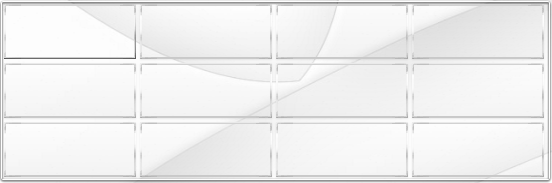
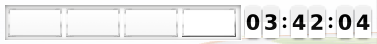
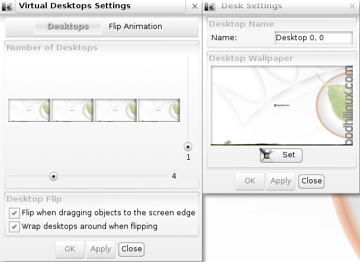
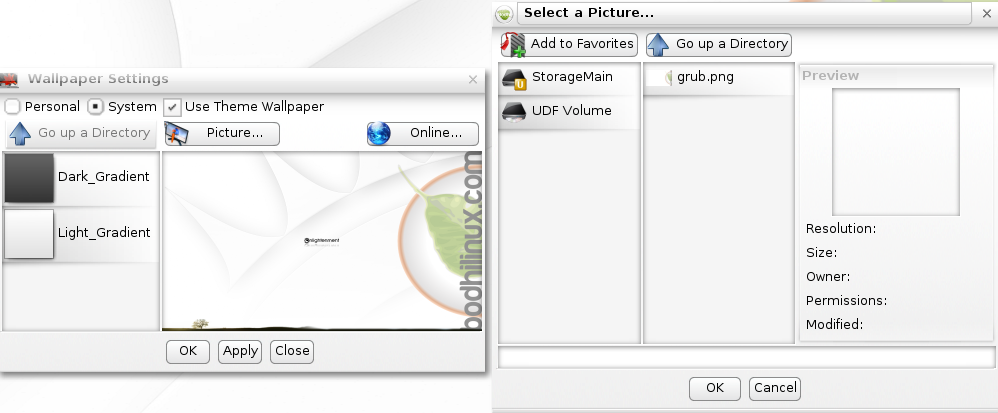

The Bodhi Guide to Enlightenment
Virtual Desktops
Virtual Desktops (sometimes called "workspaces") are utilized in nearly all Window Managers (at least those for Linux/Unix systems). Virtual Desktops allow you to keep your work organized with the ability to have different programs running on different desktops.
This may seem like an unusual and unnecessary feature at first, but rest assured that once you get in the habit of using them it is very hard to go back to using just a single desktop.
Switching Virtual Desktops
Enlightenment (E17) provides both a graphical representation of your Virtual Desktops (the Pager Gadget) and a keyboard shortcut to navigate among them.
Even with no Pager installed or running, the key combination CTRL+ALT+[right arrow] will move you to the workspace to the right, and CTRL+ALT+[left arrow] will move you back one workspace to the left.
Seeing your Virtual Desktops
For a graphical, clickable representation of your multiple workspaces, Enlightenment provides the Pager Gadget.
Depending on which Profile you selected (during the Bodhi Linux installation), the Pager will appear in different ways: different number of rows and columns of thumbnail representations of the desktops, and either on the desktop or on a Shelf.
Here is a screenshot of the Pager on the desktop in the "Fancy" Profile:

And this is how the Pager appears in a Shelf in the "Laptop" Profile.

You can switch from any Virtual Desktop to any other simply by clicking on its thumbnail.
In each screenshot, notice how each thumbnail that is second from the (top) left has an blue moonlit image in it. That is the image that is set as the desktop background, and the fact that it appears in only the one thumbnail indicates that this is the currently active desktop.
Also notice that the (top) left thumbnail in both screenshots has 2 grey boxes. These are graphics representing the open applications on that desktop, in this case LXTerminal and Leafpad.
Virtual Desktop Settings
As with almost everything in E17, you are not stuck with the Virtual Desktop setup that appeared at installation. In the "Fancy" Profile illustrated above, the Pager has four columns and three rows, which may be too many for some users. The "Laptop" Profile had only a single row, which is appropriate if you want to keep your Pager on a Shelf - but there's nothing stopping you from having two rows in your Pager on that, or any other Shelf!
To change the layout and appearance use the Virtual Desktops Settings dialog. This can be accessed in two ways:
1) right-click on the Pager and select Virtual Desktop Settings
2) Main Menu -> Settings -> All -> Screen -> Virtual Desktops.

In the Virtual Desktops Settings window that appears, you can adjust the number of rows and columns with the vertical and horizontal sliders respectively.
Below this are two checkboxes:
Flip when dragging objects to the screen edge is currently disabled and has no effect whether checked or not.
Wrap desktops around when flipping controls whether the system will switch back to the first desktop after reaching the last, or vice-versa.
Click on any of the desktops and a Desk Settings window will pop up. In this window, not only can you change the name of the Virtual Desktop, but you can also choose any picture on your disk for this particular Virtual Desktop by clicking on the Set button. In the Wallpaper Settings window that pops up, you can click on the Picture button to open the Select a Picture... dialogue.

Navigate to the folder with your background picture for this Virtual Desktop, select it and click the OK button. Repeat this sequence for all of your Virtual Desktops if you want alternate wallpapers per desktop.
Moving Applications Between Desktops
In another display of E17's versatility there is more than one way to move an application to a Virtual Desktop other than the one where it is currently running.
The first is to right-click anywhere on the title bar of the window you would like to move, scroll down to Move To and select the desktop you would like to move it to. The default naming scheme for desktops is as follows: Desktop [row],[column] and both rows and columns begin numbering at 0.
The second method is to left-click and drag the small icon in the top left of the window, then drag-and-drop it on the Virtual Desktop thumbnail in the Pager you want to move it to. If you find you've moved a window to another Virtual Desktop and it is in a position that is partially off the screen to where you can't grab the title bar to reposition the window, there is a simple fix: just hold down the Alt key then click and hold anywhere on the visible part of the window. You can then drag the window to where you would like it
| Prev: | Contents: | Next: |
| Main Menu | Index | Modules |